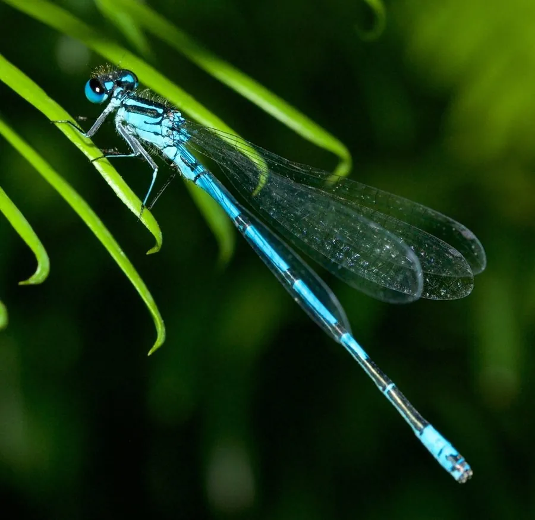

昆虫 · 动物界
蓝豆娘 Coenagrion hieroglyphicum

雄虫通体蓝色带黑色斑纹的小型豆娘，常在水草丰茂的池塘和沼泽边成群低飞，飞行轻巧，体态纤细。
- 分类
- 门节肢动物门纲昆虫纲目蜻蜓目科蟌科属蟌属
- 栖息环境
- 水草丰茂的池塘、沼泽、水田和沟渠
- 地理分布
- 东亚地区，中国北方和中部有分布
- 保护级别
- 暂无评估
物种志
蓝豆娘成虫体长 25–30 mm，翅展 35–40 mm。雄虫体色蓝色，胸部有黑色纵纹，腹部各节有黑色环斑；雌虫体色较暗。翅透明，停息时竖立在背上，飞行时像一枚蓝色的小针在水草间移动。
蓝豆娘分布于东亚，中国北方和中部有分布，栖息于池塘、沼泽、水田和沟渠，喜欢水草丰茂的环境。成虫捕食小型昆虫，常在水草间低飞；雌虫在水生植物上产卵，稚虫水生，生活在浅水中，捕食小型水生动物。豆娘飞行能力较弱，活动范围通常不大，因此对栖息地的依赖性较强，水体环境的变化会直接影响它们的种群数量。目前它没有IUCN 的正式评估，中国未将其列入国家重点保护野生动物名录。
形态与习性
- 食性成虫捕食小型昆虫，稚虫捕食水生小动物
- 体长25–30 mm，翅展 35–40 mm
- 雄虫体色通体蓝色，胸部有黑色纵纹，腹部有黑色环斑
- 栖息地水草丰茂的池塘、沼泽、水田和沟渠
- 飞行飞行轻巧，常在水草间低飞
- 稚虫水生，生活在浅水中
趣味知识
- 蓝豆娘的雄虫通体蓝色，腹部有一圈圈黑色环斑。
- 它常在水草间低飞，动作轻巧，像一枚蓝色的小针。
- 豆娘飞行能力较弱，活动范围通常不大。